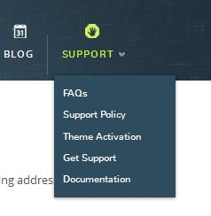
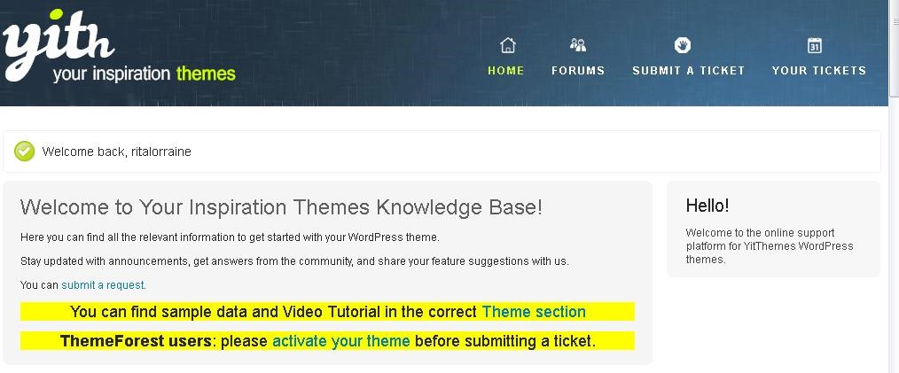
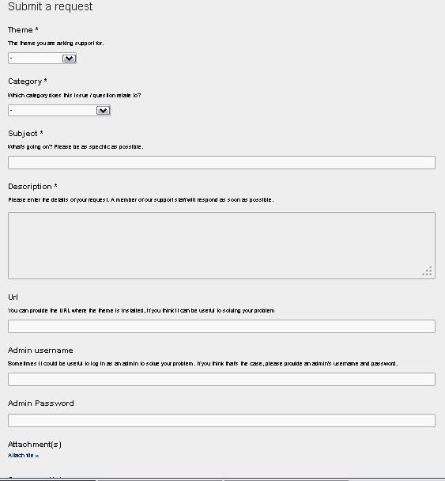

Getting More Detailed Help
In this section, you will learn how to get more detailed help with your website, including how to register for the video tutorials, how to use the forums, and when to open a ticket.
- OUR SUPPORT POLICY – When you purchase Bazar, you are entitled to support from our support staff. This includes installation guidance, bug fixing, and general problem-solving.
**Please Note - Support DOES NOT include:
- Problems with plugins not packaged with our framework and themes;
- Plugin integration;
- General WordPress support (see WordPress forums for that);
- Adding new features or extending the features currently available;
- Changing colors and/or images;
- Any type of modification or customization.
Our support staff will view all forum topics and helpdesk queries. If someone needs a unique modification (which isn’t typically easy to do) that will only take a few minutes of time or a few lines of codes to complete, yes, we’ll help. However, in most instances we’ll point you in the right direction or refer you to a developer or designer for help.
- FINDING AND USING THE FORUM – Although we have tried to make this manual as thorough as possible, there will still be times that you might benefit from visiting our Forum. There, users like you ask post their questions, and other users offer answers to help each other. First, log into YIThemes and you will see this Navigation bar:
Scroll right and click on “Support” to open a drop-down list. Click “Get Support”.

Now you’ll see the following Navigation Bar. Click on “Forums”.
- WHEN TO OPEN A TICKET – After you have read this manual, viewed the theme videos and browsed the forum, if you still have problems or questions, you may “Open a Ticket” with our Support Team.
To open a ticket, you will sign into YIThemes.com and then you will see this screen:
Go to the far right of the Navigation Bar and click “Support” to open a drop-down box:
Click on “Get Support” to arrive at the “Theme Knowledge Base”. You can now click on “Submit a Ticket” on the Navigation Bar, or you can scroll down and browse through several subjects in the Theme Knowledge Base.

If you click “Submit a Ticket,” your screen will look like this:

You will be asked what type of problems you’re having (installation and update; shop issues; style and CSS; theme options, etc.).
You will also be asked to:
- describe the problem you’re having
- include your website address (url)
- include your username
- include your password
- upload any pictures you think will help us to understand the problem
We ask for this information because it is easier and faster for us to find and fix your issue when we can see for ourselves what you have done. If we cannot find the problem, we may also ask for your FTP credentials to do more research.
OUR GENERAL SUPPORT HOURS are Monday to Friday, 9:00AM to 6:00PM (GMT+1). During this time, we can generally provide feedback on any support query within 12 – 24 hours. Any queries outside of these hours will be answered within 48 hours.